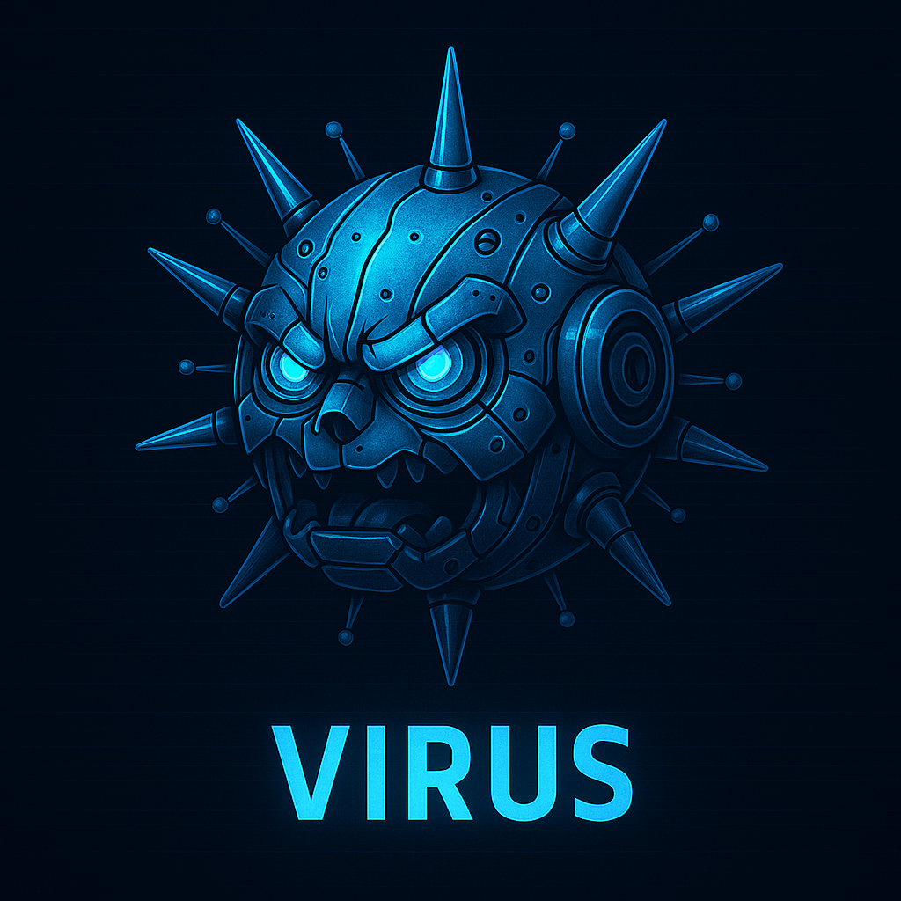

What is a Computer Virus?
A computer virus is a kind of malware that hides inside legitimate files or programs. It activates when the infected item runs, then replicates and spreads as that file or app is opened or shared. Viruses can slow systems, crash applications, corrupt or erase data, and in some cases help attackers steal information or disrupt operations. Source
Virus Lifecycle
- Dormant phase: After entering the system, the virus stays hidden and inactive to avoid detection.
- Propagation phase: The virus copies itself into files, folders, or programs and can spread to other machines via shared items.
- Triggering phase: A specific event—like opening a file, running an app, or hitting a set date—activates the virus.
- Execution phase: The malicious payload runs, causing effects such as data corruption, slowdowns, or data theft.
Source: Fortinet — Computer Virus